Pintura feita por Frida Kahlo
O que é a arte?
Segundo o dicionário, a arte é "habilidade ou disposição dirigida para a execução de uma finalidade prática ou teórica, realizada de forma consciente, controlada e racional", para mim, arte é alguma coisa que faça, por mais simples que seja, que contenha sentimento nela, pintura, escultura, dança, música... Arte pode ser feita com pincéis e tela, lápis, gesso, pedras, grafite e muito mais, pode até mesmo ser digital, vai da criatividade de cada um. Muitas pessoas tem opiniões diferentes sobre esse assunto, qual seria a sua?
.
.
.
Vamos falar de artistas e suas artes...
Artistas antigos
É claro, precisa de alguém para criar as artes, ao longo dos anos, diversos artistas surgiram, cada um com seu estilo diferente de trabalho, aqui estão alguns que passaram por esse mundo:
Leonardo da Vinci

Retrado de Leonardo da Vinci
Seu nome completo era Leonardo di Ser Piero da Vinci, mas é mais conhecido como Leonardo da Vinci, nasceu em 2 de maio de 1519 na Itália. era destaque nas áreas da ciência, matemática, engenharia, invenção, anatomia, pintura, escultura, bontânica, poesia, arquitetura e música.
Duas de suas obras, a Mona Lisa e A Última Ceia, estão entre as pinturas mais famosas, mais reproduzidas e mais parodiadas de todos os tempos, e sua fama se compara apenas à Criação de Adão, de Michelangelo.[6] O desenho do Homem Vitruviano, feito por Leonardo, também é tido como um ícone cultural, e foi reproduzido por todas as partes, desde o euro até camisetas. Cerca de quinze de suas pinturas sobreviveram até os dias de hoje
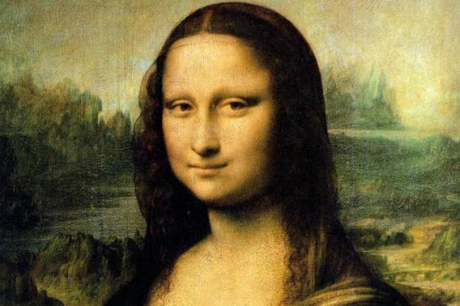Mona Lisa, uma das pinturas mais famosas de Da Vinci
.
.
.
Aleijadinho
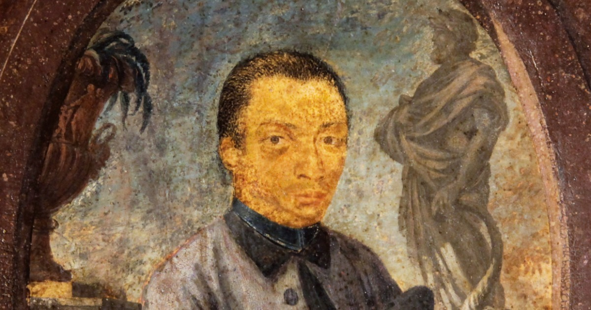retrato de Aleijadinho
Antônio Francisco Lisboa, O Aleijadinho, nasceu na cidade mineira de Vila Rica, atual Ouro Preto. Toda sua obra, entre talha, projetos arquitetônicos, relevos e estatuária, foi realizada em Minas Gerais, especialmente nas cidades de Ouro Preto, Sabará, São João del-Rei e Congonhas. Os principais monumentos que contém suas obras são a Igreja de São Francisco de Assis de Ouro Preto e o Santuário do Bom Jesus de Matosinhos. Com um estilo relacionado ao Barroco e ao Rococó, é considerado pela crítica brasileira quase em consenso como o maior expoente da arte colonial no Brasil e, ultrapassando as fronteiras brasileiras, para alguns estudiosos estrangeiros é o maior nome do Barroco americano, merecendo um lugar destacado na história da arte do ocidente.
Como ocorre com outros artistas coloniais, a identificação das obras do Aleijadinho é dificultada pelo fato dos artistas da época não assinarem suas obras e pela escassez de fontes documentais. Em geral os documentos como contratos e recibos acordados entre as irmandades religiosas e os artistas são as fontes mais seguras para a atribuição de autoria
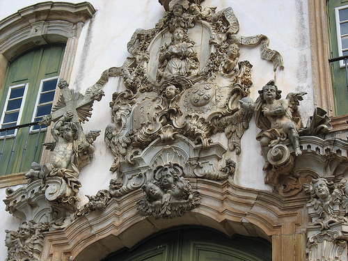uma das obras de Aleijadinho
.
.
.
Beethoven
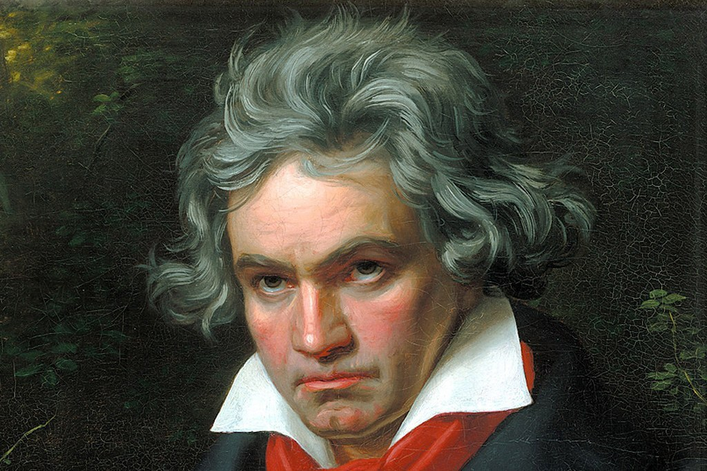Saindo um pouco de artes visuais, temos um compositor, Beethoven. Ludwig van Beethoven foi um compositor alemão, do período de transição entre o Classicismo e o Romantismo. É considerado um dos pilares da música ocidental, pelo incontestável desenvolvimento, tanto da linguagem como do conteúdo musical demonstrado nas suas obras, permanecendo como um dos compositores mais respeitados e mais influentes de todos os tempos.
Beethoven produziu cerca de 200 obras como sonatas, sinfonias, concertos, quartetos para cordas. No entanto, escreveu apenas uma ópera, “Fidélio”. O compositor alemão soube captar as características do romantismo e escreveu obras que expressam ideias e sentimentos. Além disso, inovou ao aumentar o número de músicos de uma orquestra para executar suas obras e empregar um coro na sua última sinfonia.
Artistas atuais
É claro que não podemos esquecer dos artistas atuais, cada um tem cada obra incrível, são tantos...
Romero Brito
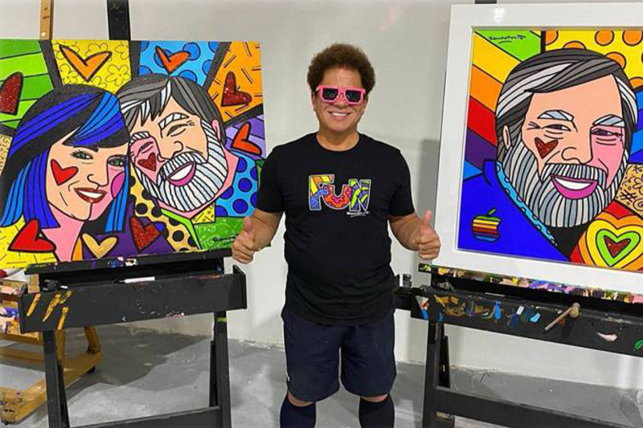Imagem do artista Romero Brito
Romero Britto é um artista plástico brasileiro de grande renome internacional.Romero Britto nasceu no Recife, Pernambuco, em 6 de outubro de 1963, aos 8 anos de idade começou a mostrar interesse e talento pelas artes. Com muita imaginação e criatividade, pintava em sucatas, papelão e jornal. Sua família o ajudava a desenvolver seu talento natural, dando-lhe livros de arte para estudar. "Eu ficava sentado e copiava Tolouse e outros mestres dos livros, por dias e dias." Aos 14 anos fez sua primeira exibição pública e vendeu seu primeiro quadro à Organização dos Estados Americanos. Embora encorajado por este sucesso precoce, as circunstâncias modestas de sua vida o motivaram a estabelecer metas e a criar seu próprio futuro. "Na condição de criança pobre no Brasil, tive contato com o lado mais sombrio da humanidade. Como resultado, passei a pintar para trazer luz e cor para minha vida." A sua arte é tão completa que ele foi considerado como embaixador das artes no Estado da Flórida, o que para ele com certeza foi uma satisfação. E ainda essa nomeação quem a deu foi o irmão de George Bush, Jeb Bush. Ele construiu uma pirâmide como forma de reprodução da Pirâmides de Gizé que é uma das sete maravilhas do mundo antigo. Ele reproduziu em uma altura que equivale a um prédio de quatro andares.
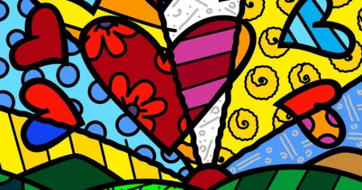Uma das obras de Romero Britto
.
.
.
Beatriz Milhazes
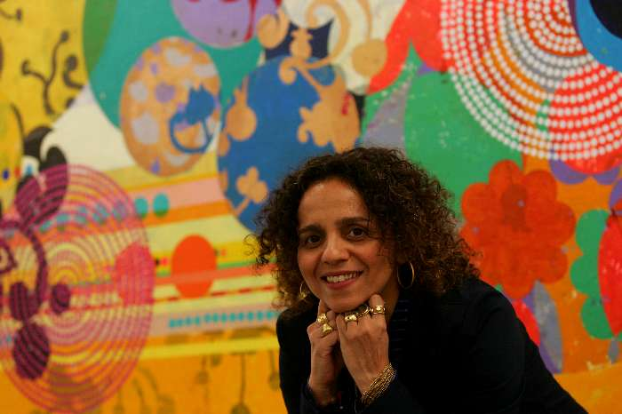Imagem de Beatriz Milhazes
Sua trajetória nas Artes Plásticas começou em 1980 ao ingressar na Escola de Artes Visuais do Parque Lage - EAV/Parque Lage, onde, mais tarde, passou a ser professora e a coordenar atividades culturais. A artista cursou gravura em metal e linóleo no Atelier 78, com Solange Oliveira e Valério Rodrigues, nos anos 1995 e 1996.[4] Em 1997, participou do livro" As Mil e Uma Noites à Luz do Dia" : Sherazade Conta Histórias Árabes, de Katia Canton, com suas ilustrações.
A sua obra artística é focada, principalmente, na pintura, mas desenvolve trabalhos no campo da colagem, no da gravura, no da cenografia e em projetos para espaços específicos. Também realizou ilustrações para livros - como as do livro “1001 Noites à Luz do Dia - Sherazade conta histórias árabes", de Katia Canton, e projetos gráficos para editoriais de revistas e jornais. Sua pintura mescla procedimentos do Pop art com referências ao artesanato brasileiro e ao universo feminino.
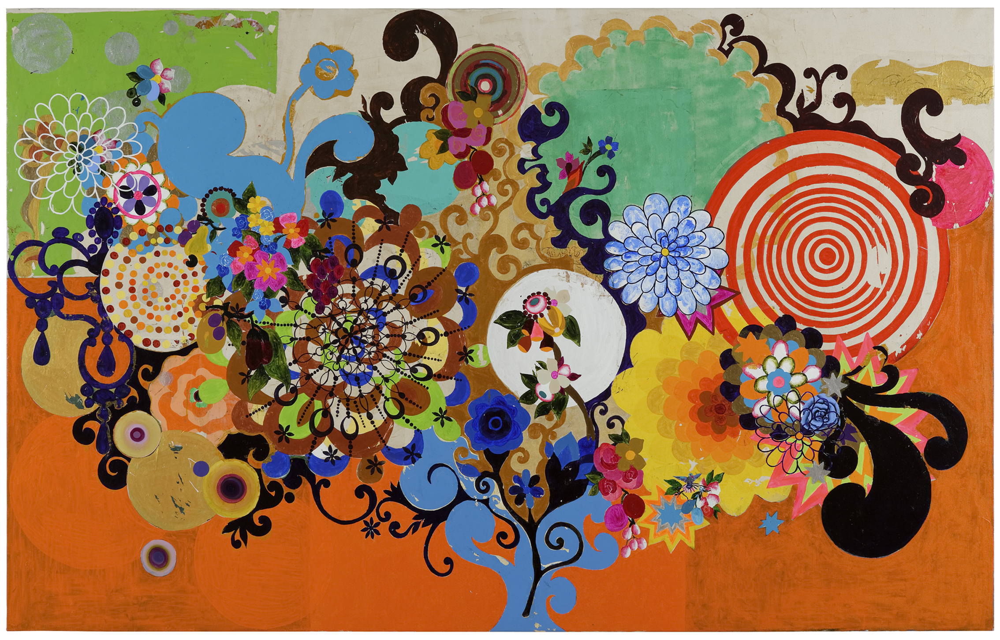Obra de Beatriz Milhazes
.
.
.
Tomie Ohtake
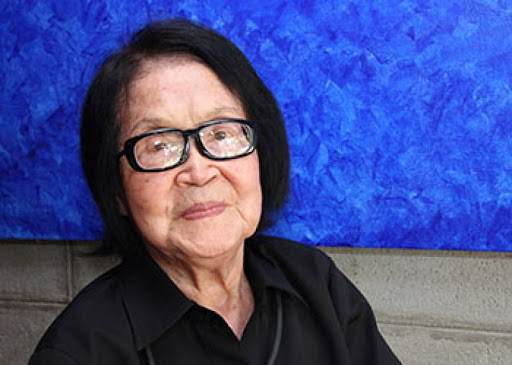Imagem de Tomie Ohtake
Tomie Ohtake nasceu em 1913 em Quioto (Japão). Desde criança, como acontece em sua terra, tomou contato com a arte da caligrafia, indispensável para se expressar com clareza usando caracteres e ideogramas orientais. Da caligrafia ao desenho, foi um passo. Sem nada que a reprimisse, mas também sem ninguém que a incentivasse, rabiscava a todo instante, procurando figurar tudo o que estivesse ao seu redor. Se no Japão, nunca teve à sua frente um professor de pintura, no Brasil pior ainda. Casada em tenra idade, tornou-se uma dona de casa, em uma sociedade fechada, de costumes milenares, onde a mulher era submissa e limitada a um círculo restrito de amizades e de participação. Assim, sua índole artística ficou hibernando até os 31 anos, quando o acaso pôs à sua frente o professor de arte e pintor Keisuke Sugano, recém-chegado do Japão, e que se achava apenas de passagem por São Paulo.
Auxiliada por ele, Tomie fez seus primeiros quadros, simples pinturas figurativas, depois, algumas paisagens com inclinação para o fauvismo e outras experiências já com a presença do cubismo. A maior parte dos quadros pintados nessa primeira fase artística perdeu-se numa das enchentes, tão comuns em certas regiões de São Paulo, e que destruiu quase tudo que possuía.
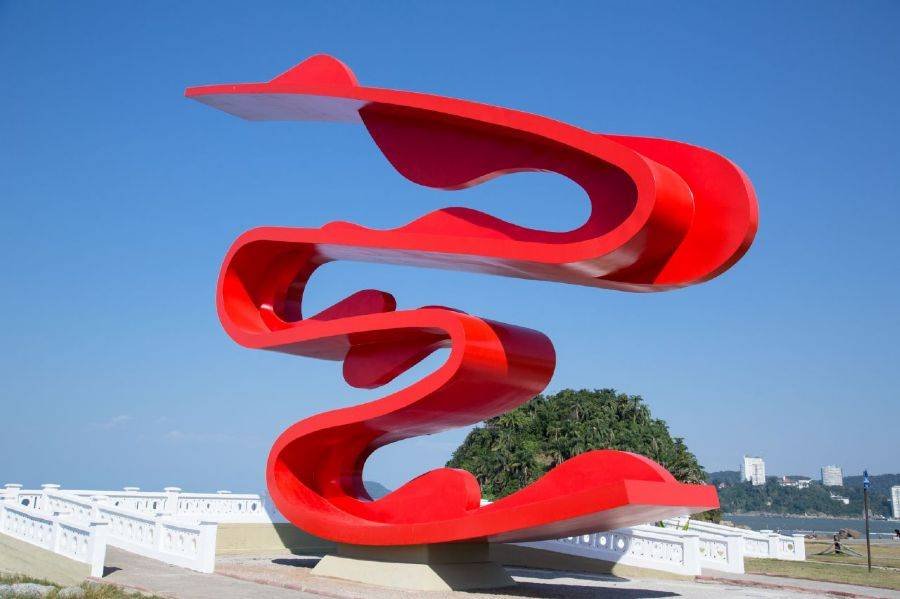Escultura de Tomie
EXTRAS
Bom, não posso deixar de mostrar uma arte feita por mim, a pessoa que fez esse site, espero que goste :)
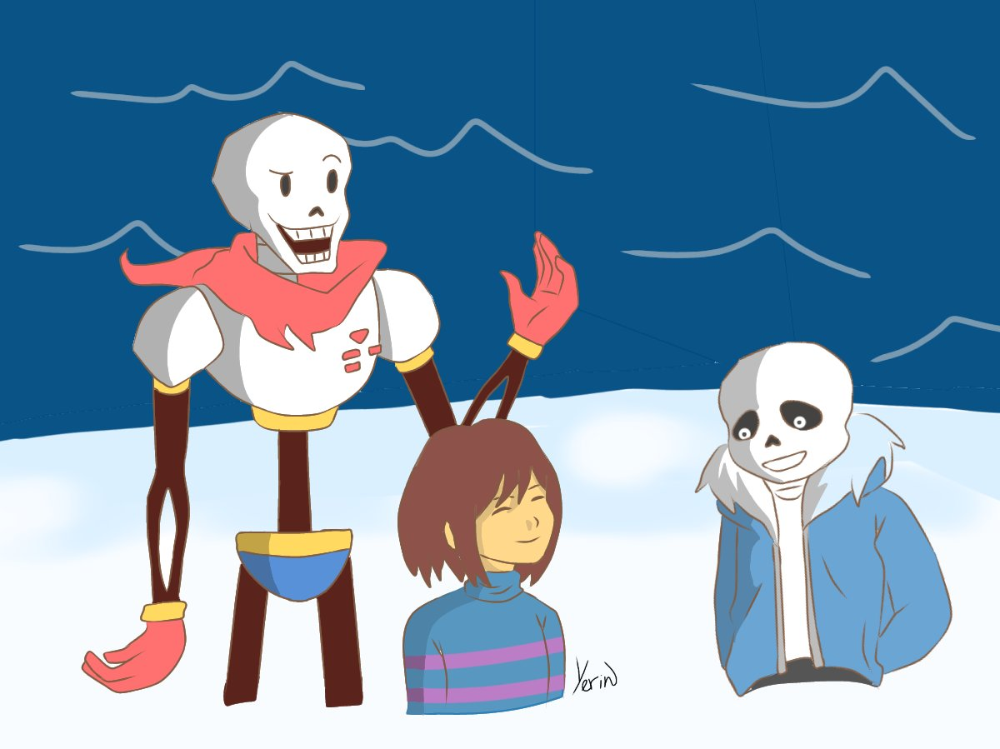